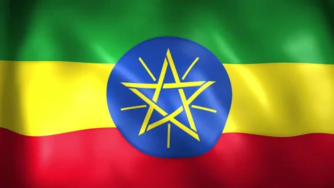
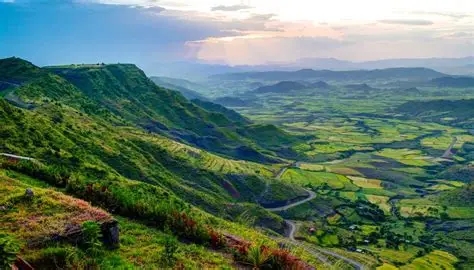
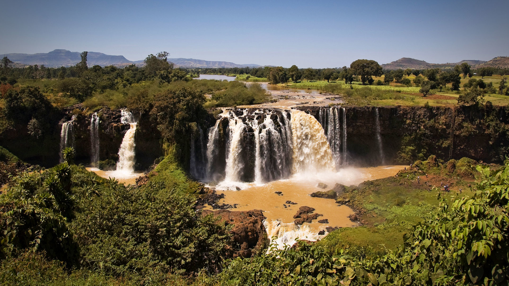
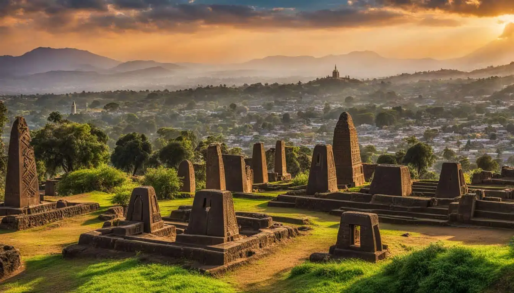
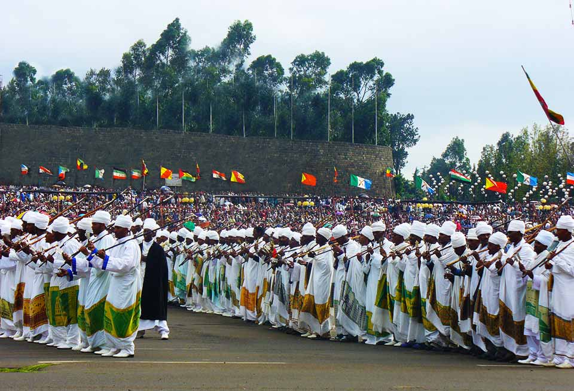

Contents
- About Ethiopia
- Cities in Ethiopia
- Cultures of Ethiopia
- Facts about Ethiopia
- National anthem
- Explore More

Current priminister
Dr.Abey Ahmed.webp)
Capital city
Addis AbabaAbout Ethiopia
Ethiopia is a historic and culturally rich country located in the Horn of Africa. Known as one of the oldest civilizations in the world, it has a unique heritage that dates back thousands of years. Unlike most African nations, Ethiopia was never fully colonized, which helped preserve its traditions and identity. The country is home to diverse landscapes, ranging from high mountains and deep valleys to vast deserts. Its capital city, Addis Ababa, serves as a major political and cultural center in Africa. Ethiopia is also famous for being the birthplace of coffee and for its ancient sites such as Lalibela, which attract visitors from around the world. With over 80 ethnic groups and languages, Ethiopia is a nation of great diversity, tradition, and resilience.


- Addis Ababa
- The capital and largest city, political and economic center.
- Dire Dawa
- A major trade and transport hub
- Mekelle
- Known for its role in the Tigray region.
- Gondar
- Famous for its castles and history.
- Hawassa
- A beautiful lakeside city and industrial center.
Cultures of Ethiopia
Ethiopia is one of the most culturally diverse countries in Africa, with more than 80 ethnic groups, each having its own language, traditions, and lifestyle. Major groups include the Oromo, Amhara, Tigray, and Somali peoples. This diversity makes Ethiopia rich in cultural heritage and unique traditions.
Religion plays an important role in everyday life. Ethiopian Orthodox Christianity is one of the oldest Christian traditions in the world, alongside Islam and other beliefs. Religious festivals such as Timkat and Meskel are widely celebrated with colorful ceremonies, music, and community gatherings.
Traditional clothing is an important part of Ethiopian identity. Many people wear handmade garments like the Habesha Kemis, often decorated with detailed embroidery. Ethiopian food is also a key cultural element, with Injera (a sour flatbread) served with a variety of spicy stews called wot.
Music and dance vary across regions, with each ethnic group having its own style. Traditional dances often involve energetic shoulder and body movements. Ethiopia is also well known for its coffee culture, where the traditional coffee ceremony is an important symbol of hospitality and social connection.


| Fact | Description |
|---|---|
| Ancient History | Ethiopia is one of the oldest countries in the world with thousands of years of history. |
| Never Colonized | It is the only African country that was never fully colonized. |
| Capital City | The capital city of Ethiopia is Addis Ababa. |
| Unique Calendar | Ethiopia uses its own calendar, which is about 7-8 years behind the Gregorian calendar. |
| Own Alphabet | The country has its own writing system called Ge'ez. |
| Birthplace of Coffee | Ethiopia is widely known as the birthplace of coffee. |
| Traditional Food | Injera is the most popular traditional food, often served with stews. |
| 13 Months | Ethiopia has 13 months in a year. |
| Blue Nile Source | The Blue Nile River begins from Lake Tana in Ethiopia. |
| Geography | The country has diverse landscapes including mountains, valleys, and deserts. |